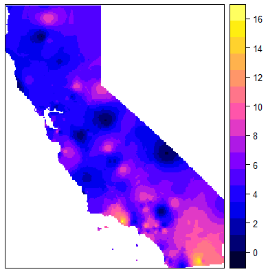
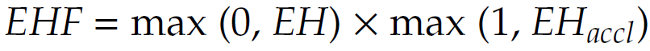
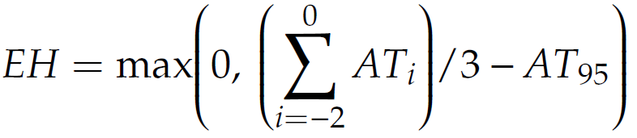
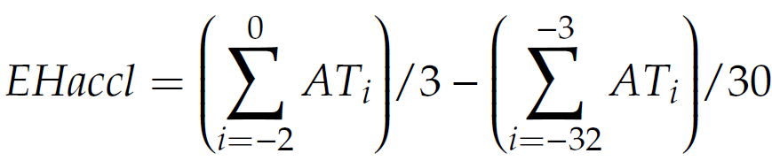

Extreme climate events are increasingly identified as a significant factor for hospitalization and health outcomes. The risk that is raised by an extreme heat or cold event is often amplified by environmental and socioeconomic conditions of the impacted area and its population demographics. We have developed a spatiotemporal methodology to delineate boundaries for Extreme Heat and Cold Events across space and time. Hence, our method helps to quantify the potential hospitalization risk of such extreme events in a scalable manner.
In an exploratory work, we have compiled climatological data from year 2010 to 2020 from California to interpolate the geostatistical distribution of average daily apparent temperature for more than 120 NOAA stations using an Inverse Distance Weighting (IDW) technique. In 2019, for example, we have identified 317 extreme heat events (with an average and max duration of 2.18 and 4 days, respectively), and 274 extreme cold events (with an average and max duration of 1.68 and 3 days). Detailed results of this analysis can be found here. During 50 distinct days of heat events, 98.3% of California’s land surface was impacted by at least one extreme heat event. Figure 1 illustrates the extent of these heat events derived from the stacking spatial temporal interpolated surfaces.
Building upon a known methodology for identifying extreme heat events (EHE), [[78,79]] we performed a multi-step approach to integrate data from different sources using spatial and temporal benchmarks.
We leveraged historical weather station data and adapted the extreme heat event (EHE) and extreme cold event (ECE) definitions[[87]] to identify extreme heat/cold events at each station by aggregating hourly weather records. In absence of a unified definition for such extreme events [[51]], researchers often incorporate relative measures of apparent temperature [[88]] to identify days in which human thermoregulation is stressed [[89–92]]. Accounting for antecedent climate conditions is also suggested, as acclimatization can be a critical factor to impact the heat and cold events hazards.[[93]] Sheridan et al. [[87]] define an extreme heat event (EHE) over a certain period of time, as an episode when the excess heat factor (EHF) exceeds the 85th percentile of all the recorded positive EHF values. EHF is derived as the product of the excess heat (EH) and an acclimatization term (EHaccl) [[94]]:

Where:


Early studies on the effect of heat/cold exposure suggested effect differences on mortality related to the timing, duration, and intensity of the events. [[93,95,96]] At each station, we applied a temporal clustering algorithm to compute the extreme events duration and their seasonal precedence. The algorithm iterates through temporally ordered apparent temperature data and tag each and every daily record that satisfies extreme heat/cold event criteria. Non-extreme conditions are also coded as “0”, heat events as “1” and cold events as “2”. We assigned code “3” for the unlikely situations that the both events occur on the same day. Then, for each episode of the extreme heat/cold, a Unique Identifier (UID) was generated for those consecutive days that the event persists. By aggregating all the daily records based on the UIDs, duration and seasonal precedence of the events was identified. Finally, reiterating through updated records, the ordinal position of each day within the extreme heat/cold event was calculated. We introduced the Extreme Heat and Cold Magnitude Indicators (EHMI and ECMI) as normalized products of the intensity and duration of the event.
In our fututre work, to assure the accuracy of estimated surfaces, we will use a machine learning model trained on the built environment features (e.g., land cover type, building footprint coverage, land surface temperature, and tree canopy and impervious surface coverage) to adjust EHMI and ECMI around each weather station (30 m pixels in 1000 m radius). The urban heat literature identifies three main methods to measure heat exposure: (a) using land surface temperature (LST) driven from satellite images, [[99,100]] (b) using atmospheric temperature drive from weather stations [[75,101]], and (c) using mean radiant temperature (MRT).[[102]] Each method has advantages and disadvantages, depending on the purpose and scale of the research. Atmospheric climate variables such as air temperature and relative humidity are appropriate for measuring the public health impact of urban microclimate extremes. Whereas LST is suitable for evaluating how regional landscape characteristics drive the urban heat islands effect. Therefore, LST can be used to measure the disparities of urban heat at city-levels. To combine atmospheric data with land surface temperature and built environment features, we will build a predictive model that estimates EHMI and ECMI to adjust the data of the closest weather station for each cell in zip code polygons. In this approach the variability of temperatures in urban areas due to urban form configurations will be taken into account. Also, in this framework, we can use climate zones that are already developed for the continental U.S. [[103]].